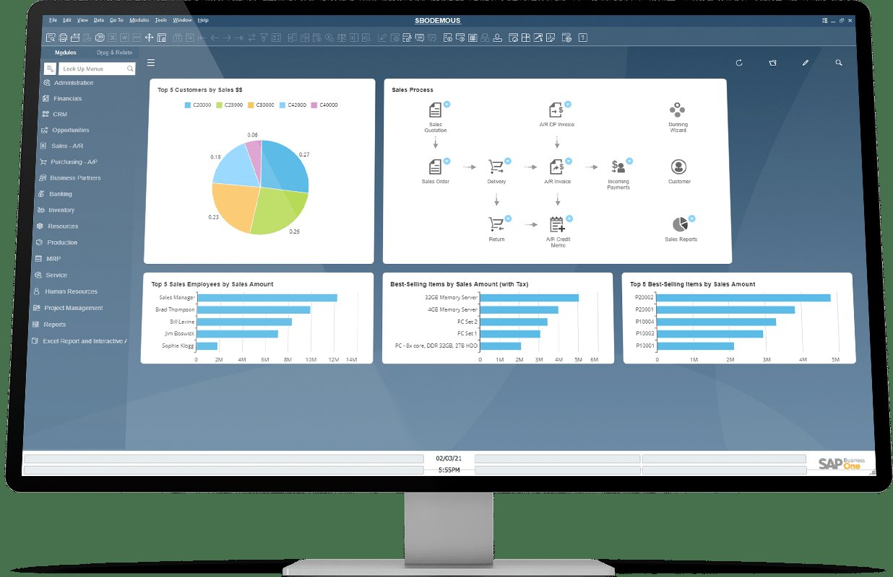
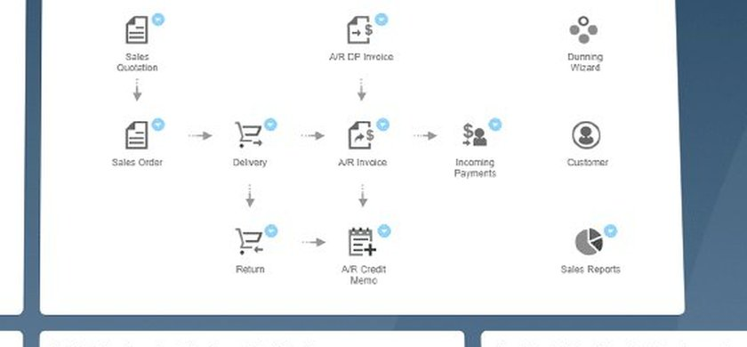

Dead Brands Services
SAP Business One, Without the Enterprise Price Tag (or the Pain)
“SAP” makes small business owners picture million-dollar projects and consultants in suits. SAP Business One is the other SAP — built for companies like yours. Here’s the straight version.

What SAP Business One actually is
SAP Business One — B1, as everyone calls it — is SAP’s ERP built specifically for small and mid-sized businesses. One system covering financials, inventory, sales, purchasing, manufacturing, and reporting, all sharing the same data in real time.
It’s not a watered-down toy. It’s a real ERP with real teeth: multi-warehouse inventory, landed cost tracking, production orders, multi-currency, approvals and workflows. The difference from SAP’s enterprise products isn’t capability for its market — it’s scope. B1 is sized for how SMBs actually operate.
The myth problem
Two myths keep good companies away from B1. Myth one: “SAP means millions of dollars.” B1 is a different product in a different market — real money, yes, but SMB money, not enterprise money. Myth two: “It’s too complex for us.” Any ERP is complex if it’s implemented badly. Implemented well, B1 is the thing that removes complexity — because the complexity was in your twelve disconnected systems, not in the software.
Here’s the honest counterweight: B1 still needs a proper implementation and a partner who knows what they’re doing. It’s not plug-and-play, and anyone who tells you otherwise is selling, not advising. The pain people associate with SAP comes from bad implementations, not from the product.
Who it’s actually for
B1 shines for growing companies where inventory and operations are the business: distributors, manufacturers, wholesalers, and multi-location operations. If you’re tracking stock across warehouses, dealing in multiple currencies, running production, or outgrowing entry-level accounting in ways that hurt — that’s the B1 profile.
It’s also a strong fit for companies that want the SAP name on their system without the SAP enterprise project. Suppliers to large enterprises, companies planning serious growth, businesses that need audit-ready financials — B1 carries weight in those rooms.

Why the partner matters more than the software
I’ll say the quiet part out loud: with B1, who implements it matters more than what you buy. I know this because I used to run the Northeast region for Vision33, one of the biggest SAP Business One partners out there. I’ve seen B1 implementations done brilliantly, and I’ve seen exactly where they go sideways — usually in scoping, data migration, and the training nobody wants to pay for.
Today I’m contracted Head of Sales for Quaint Business Solutions, and we implement SAP Business One the way it should be done: scoped to how your business actually runs, data migrated cleanly, team trained properly, and support that answers the phone after go-live. No death marches. No disappearing partners.
The honest cost conversation
Let’s not dance around it: B1 costs real money. Licenses, implementation, training, ongoing support. What it doesn’t cost is enterprise money — and what it saves is the hidden tax you’re already paying: the labor of disconnected systems, the inventory write-offs from bad data, the decisions made on numbers nobody trusts.
The most expensive ERP is the wrong one, or the right one implemented badly. Get those two things right and B1 pays for itself in operational sanity alone.
Go deeper
The full SAP Business One guide
This page is the overview. The full guide goes deeper into B1 capabilities, what an implementation engagement looks like, and how we scope it so it lands. If SAP Business One is on your radar, read it.
Frequently asked questions
What’s the difference between SAP Business One and S/4HANA?
They’re different products for different markets. S/4HANA is SAP’s enterprise ERP — big companies, big projects, big budgets. Business One is built for small and mid-sized businesses. Same SAP DNA, completely different scale of investment and implementation. If you’re an SMB, B1 is the one built for you.
SAP Business One vs. Odoo — which should I pick?
Honest answer: it depends on your business, and anyone who answers without asking about your operations is selling. Both are strong SMB ERPs with different strengths. I implement both, which means I can give you a straight comparison based on how you actually run — not a sales pitch for whichever one I happen to sell.
Is SAP Business One cloud or on-premise?
Both options exist. Cloud means no servers to manage and access from anywhere; on-premise gives you full control of your infrastructure. The right choice depends on your IT situation, your compliance needs, and your connectivity. We’ll walk through the trade-offs for your specific case.
Is SAP Business One right for your company?
Thirty minutes. Straight answers from someone who’s run B1 implementations — not a sales rep with a quota.